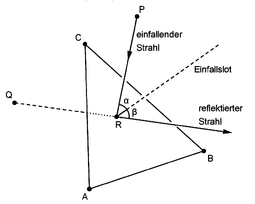

Bayerisches Abitur in Mathematik 2014¶
Aufgabe
In einem kartesischen Koordinatensystem legen die Punkte \(A(4|0|0)\), \(B(0|4|0)\) und \(C(0|0|4)\) das Dreieck \(ABC\) fest, das in der Ebene \(E: x_1+x_2+x_3=4\) liegt.
Bestimmen Sie den Flächeninhalt des Dreiecks \(ABC\).
Das Dreieck \(ABC\) stellt modellhaft einen Spiegel dar. Der Punkt \(P(2|2|3)\) gibt im Modell die Position einer Lichtquelle an, von der ein Lichtstrahl ausgeht. Die Richtung dieses Lichtstrahls wird im Modell durch den Vektor
beschrieben.
Geben Sie eine Gleichung der Geraden \(g\) an, entlang derer der Lichtstrahl im Modell verläuft. Bestimmen Sie die Koordinaten des Punkts \(R\), in dem \(g\) die Ebene \(E\) schneidet, und begründen Sie, dass der Lichtstrahl auf dem dreieckigen Spiegel auftrifft.
(zur Kontrolle: \(R(1{,}5|1{,}5|1)\) )
Der einfallende Lichtstrahl wird in demjenigen Punkt des Spiegels reflektiert, der im Modell durch den Punkt \(R\) dargestellt wird. Der reflektierte Lichtstrahl geht für einen Beobachter scheinbar von einer Lichtquelle aus, deren Position im Modell durch den Punkt \(Q(0|0|1)\) beschrieben wird (vgl. Abbildung).
Zeigen Sie, dass die Punkte \(P\) und \(Q\) bezüglich der Ebene \(E\) symmetrisch sind.
Das Lot zur Ebene \(E\) im Punkt \(R\) wird als Einfallslot bezeichnet.
Die beiden Geraden, entlang derer der einfallende und der reflektierte Lichtstrahl im Modell verlaufen, liegen in einer Ebene \(F\). Ermitteln Sie eine Gleichung von \(F\) in Normalenform. Weisen Sie nach, dass das Einfallslot ebenfalls in der Ebene \(F\) liegt.
(mögliches Teilergebnis: \(F : x_1-x_2=0\) )
Zeigen Sie, dass die Größe des Winkels \(\beta\) zwischen reflektiertem Lichtstrahl und Einfallslot mit der Größe des Winkels \(\alpha\) zwischen einfallendem Lichtstrahl und Einfallslot übereinstimmt.
Lösung zu Teil a
Um den Flächeninhalt des Dreiecks zu bestimmen, müssen wir zunächst die Verbindungsvektoren \(\vec{AB}\) und \(\vec{AC}\) bestimmen:
Mit Hilfe des Kreuzprodukts können wir anschließend den Flächeninhalt des Dreiecks bestimmen:
Wir überprüfen das Ergebnis mit Sage:
Wir zeichnen zusätzlich das Dreieck mit Hilfe von Sage:
Lösung zu Teil b
Die Gerade muss durch den Punkt \(P\) gehen und entlang des Vektors \(\vec{v}\) verlaufen. Eine Geradendarstellung ergibt sich als
Für den Schnittpunkt \(R\) setzen wir die Koordinaten der Gerade in die Ebenengleichung ein:
Der Schnittpunkt ergibt sich dadurch als
Wir überprüfen diesen Schnittpunkt mit Sage
und zeichnen die Gerade anschließend in unsere Graphik aus Teilaufgabe a) ein. Wir sehen, dass die Gerade auf dem dreieckigen Spiegel auftritt. Dies folgt auch daraus, dass alle Koordinaten des Schnittpunkts positiv sind.
Lösung zu Teil c
Zunächst sehen wir uns den Verbindungsvektor \(\vec{PQ}\) an:
Aus der Ebenengleichung von \(E\) lässt sich leicht ablesen, dass der nicht normierte Normalenvektor von \(E\) durch
gegeben ist, welcher offensichtlich parallel zum Verbindungsvektor \(\vec{PQ}\) ist. Die Punkte \(P\) und \(Q\) liegen also auf derselben Normalen zu \(E\). Damit die Punkte symmetrisch bezüglich \(E\) sind, müssen sie noch den gleichen Abstand zur Ebene haben. Wir überprüfen dies, indem wir die Mitte der Verbindungsstrecke in die Ebenengleichung einsetzen:
Die Punkte liegen also symmetrisch bezüglich der Ebene.
Wir zeichnen die Verbindung der Punkte \(P\) und \(Q\) sowie den reflektierten Lichtstrahl in unsere Skizze ein:
Lösung zu Teil d
Wir betrachten die beiden Geraden
und
Eine Ebenengleichung lässt sich mit dem gemeinsamen Schnittpunkt \(R\) leicht aufstellen:
Diese Ebenengleichung lässt sich durch die \(x_1\)- und \(x_2\)-Komponente darstellen:
Das Einfallslot, welches senkrecht zur Ebene \(E\) durch den Punkt \(R\) verläuft, lässt sich darstellen als
Die \(x_1\)- und die \(x_2\)-Koordinate von \(e\) erfüllen offensichtlich die Ebenengleichung \(F\), womit \(e\) in \(F\) liegt.
Wir zeichnen auch die Ebene \(F\) und das Einfallslot \(e\) in die Zeichnung ein:
Lösung zu Teil e
Die Winkel \(\alpha\) und \(\beta\) können einfach über das Skalarprodukt berechnet werden:
und analog:
Die Winkel \(\alpha\) und \(\beta\) sind also gleich groß, was auch durch unsere Skizze oder durch explizite Auswertung mit Sage bestätigt wird.